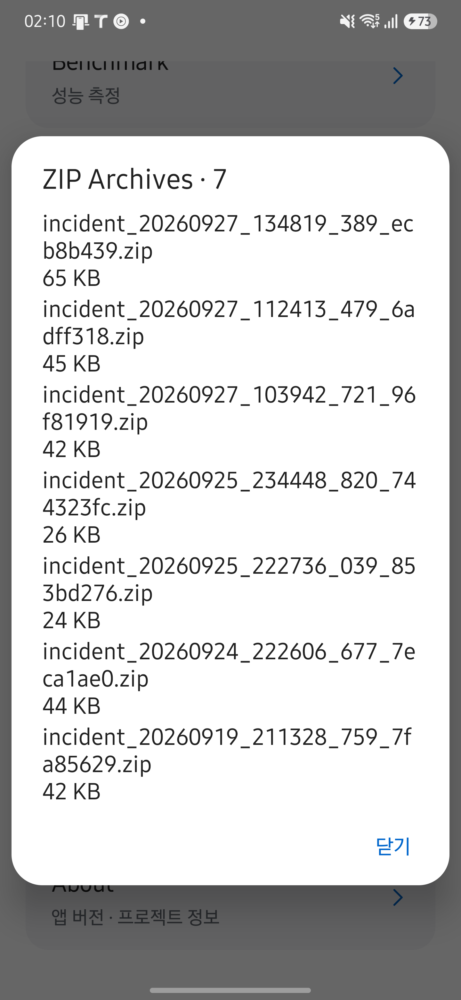

HAL CAMERA / Design Documentation
Trace the cause.
측정 결과가 예상과 다르면 세션 ID, 관측 창, unknownReason부터 확인하세요. 그다음 원시 이벤트와 계산된 지표를 대조합니다. 지표에는 앱의 필터와 표본 수 규칙이 적용되어 있습니다.
| 지금 하려는 작업 | 이동할 절 |
|---|---|
| 재현에 필요한 정보를 모읍니다. | 문제 발생 시 수집할 정보 |
| 로그와 incident 번들을 확보합니다. | 로그와 진단 자료 |
| 증상이 시작된 계층을 좁힙니다. | 앱과 프레임워크·HAL 구분 |
| 앱 버전과 SDK 설정을 확인합니다. | 빠른 시작의 빌드 정보 |
실행 순서가 익숙하지 않다면 주요 실행 흐름을 먼저 읽으세요.
문제 발생 시 수집할 정보
재현 조건과 기록을 함께 남기세요. 앱 버전은 빠른 시작의 빌드 정보와 대조합니다.
- 기기 모델과 Android 빌드 번호를 기록합니다.
- 사용한 엔진인 Camera2 또는 CameraX와 카메라 엔드포인트를 기록합니다.
- 재현 절차와 반복 횟수 중 문제가 발생한 횟수를 기록합니다.
이벤트 저장 · ZIP으로 생성한 번들과 관련 로그를 확보합니다.
로그와 진단 자료
Live의 이벤트 저장 · ZIP은 직전 10초와 이후 5초의 이벤트를 incident ZIP으로 저장합니다. 저장한 파일은 Lab → ZIP Archives에서 공유합니다.
아래 화면은 2026년 9월 29일 Galaxy S25+·Android 16에서 HAL CAMERA 0.15.0을 실행해 촬영했습니다. 촬영 조건과 확인 범위를 함께 확인하세요. 이미지를 누르면 원본이 열립니다.

아래는 현재 추출기가 TAG 상수와 Log.* 호출에서 찾은 로그 태그입니다. 목록에 없다는 이유만으로 코드 전체에서 해당 태그를 사용하지 않는다고 단정할 수는 없습니다.
| 로그 태그 | 선언 위치 |
|---|---|
BenchmarkReport |
app/src/main/java/dev/halcamera/benchmark/platform/BenchmarkReport.kt |
BenchmarkStore |
app/src/main/java/dev/halcamera/benchmark/platform/BenchmarkStore.kt |
Camera2Ops |
app/src/main/java/dev/halcamera/cts/Camera2Ops.kt |
FastOnOffRunner |
app/src/main/java/dev/halcamera/cts/onoff/FastOnOffRunner.kt |
ProfileCompatibility |
app/src/main/java/dev/halcamera/benchmark/platform/ProfileCompatibilityChecker.kt |
StillPreviewCombinationRunner |
app/src/main/java/dev/halcamera/cts/combination/StillPreviewCombinationRunner.kt |
SwitchingRunner |
app/src/main/java/dev/halcamera/cts/switching/SwitchingRunner.kt |
VideoSnapshotRunner |
app/src/main/java/dev/halcamera/cts/snapshot/VideoSnapshotRunner.kt |
근거와 검토 정보
- 근거:
app/src/main/java/**/*.kt의TAG상수와Log.*호출 - 근거 수준: 코드 확인
다음 명령으로 이 태그의 로그를 확인합니다.
adb logcat -s BenchmarkReport BenchmarkStore ProfileCompatibility
incident 번들은 이벤트와 메타데이터를 담습니다. 이미지 픽셀은 저장하지 않습니다.
앱과 프레임워크·HAL을 구분하세요
먼저 앱의 필터와 계산 규칙을 확인한 뒤 원시 이벤트를 대조하세요. 프레임워크에서 받은 값과 앱이 계산한 지표를 구분해야 원인 계층을 좁힐 수 있습니다.
Event.atNs는 FlightRecorder가 주입받은 시계로 기록한 앱 시각이며, 앱에서는 elapsedRealtimeNanos를 사용합니다. 카메라가 제공한 센서 시각은 별도 필드인 sensorNs입니다. intervalMs, resultFps, observedResultGap은 앱이 계산한 파생값이므로 HAL 내부 상태의 직접 측정으로 해석하지 않습니다.
unknownReason, 세션 ID, 관측 창과 표본 수를 확인합니다.INSUFFICIENT_SAMPLES는 측정 대상의 고장을 뜻하지 않습니다.capture_failed.reason,buffer_lost,capture_result의 센서 시각과frameDurationNs를 대조합니다.request_observed는 요청 제출 시각이 아닙니다.- 센서 타임스탬프가 REALTIME 소스일 때만 앱 시각과 직접 비교합니다. 다른 시계의 값을 빼면 지연을 해석할 수 없습니다.
- 앱 기록만으로 프레임워크와 HAL 중 원인을 확정하지 않습니다. 시스템 트레이스와 카메라 서비스 로그로 추가 확인해야 합니다.
표본과 보존 규칙
| 규칙 | 확인할 코드와 영향 |
|---|---|
| 닫힌 세션의 콜백을 버립니다. | Telemetry.callback의 alive()를 확인합니다. |
| 관측 세션과 시간 창을 선택합니다. | RunAssembler.observe()가 관측 시작 이전 결과를 워밍업으로 제외합니다. 고정 5프레임 규칙은 사용하지 않습니다. |
| 표본이 부족하면 값이 비어 있습니다. | BenchmarkEvaluator의 관측 통계는 해당 지표 표본 수가 15개 미만이면 null을 반환합니다. 3A 수렴은 워밍업 전 프레임도 사용합니다. |
| 오래된 이벤트를 제거합니다. | FlightRecorder 기본 설정은 30초·18,000개이며 BenchmarkActivity는 180초·60,000개로 구성합니다. 제거 횟수는 Incident.capacityEvictions이며 incident ZIP의 incident.json에는 ringCapacityEvictionsSinceAppStart(앱 시작 이후 누적)로 기록됩니다. |
| listener는 동기로 실행합니다. | FlightRecorder.listener에 무거운 처리를 추가하면 관측 경로에 영향을 줄 수 있습니다. |
지표의 표본 부족과 실행 전체의 validity는 별도로 계산됩니다. MetricExtractor는 워밍업을 제외한 프레임 수와 지표별 가용 데이터로 표본의 unknownReason을 정합니다. RunAssembler는 observation.steadyFrames.size를 ValidityInputs.observedFrames로 전달하고, RunValidityEvaluator는 이 값이 기본 15개에 미달하거나 시작·촬영 표본이 profile의 기대 개수보다 적으면 실행에 INSUFFICIENT_SAMPLES flag를 붙입니다. 이 평가는 개별 지표의 unknownReason을 읽지 않습니다.
Callback에 값이 없을 때
현재 엔진과 Android 버전, 표시 중인 프레임의 요청 대상을 확인합니다. 콜백 없음은 관측할 수 없는 경로이며 수신 대기와 다릅니다. 행별 수신 지점과 시간 기준, 상태별 의미는 Callback에서 확인하세요.
사진 저장이나 노출이 예상과 다를 때
Camera2의 기본 사진 저장에는 센서 타임스탬프가 일치하는 YUV·JPEG 버퍼가 모두 필요합니다. Live 스트림에서 출력을 하나만 켰다면 해당 출력만 기다리며, 그 이미지도 요청의 센서 시각과 일치해야 합니다. CameraX는 두 출력을 켰을 때 JPEG와 시각이 가장 가까운 analysis 프레임을 연결하므로, media_saved.yuvOffsetNs로 차이를 확인합니다. CameraX의 JPEG 단독 촬영은 analysis를 기다리지 않으며, YUV 단독 촬영은 요청 뒤의 analysis 프레임을 저장합니다. 엔진별 연결 기준을 먼저 구분한 뒤 Callback과 저장 오류를 대조하세요. 저장 완료 안내와 녹화 조작법은 빠른 시작에 있습니다.
Camera2의 Flash Auto·On에서 precapture 측광이 3초 안에 끝나지 않으면 안내 문구를 표시하고 촬영을 진행합니다. 촬영 지연을 확인할 때 이 대기 시간도 구분하세요. CameraX의 플래시 측광은 ImageCapture가 처리합니다.
AE 잠금을 켠 채 녹화를 시작하거나 멈추면 새 세션에서 노출을 다시 맞춘 뒤 잠급니다. 잠금 전과 1/3 EV 넘게 달라지면 차이를 알립니다. Camera2 녹화에서는 노출 시간이 30fps의 프레임 길이인 약 33 ms로 제한되므로 어두운 장면의 노출이 달라질 수 있습니다. 요청과 적용 결과는 request_observed·capture_result·ae_relocked 이벤트로 대조합니다.
실행 기록과 CSV의 개수가 다를 때
화면의 필터와 PC 집계의 적격성 필터가 다를 수 있습니다. Benchmark의 실행 기록에서 필터·내보내기·보관 한도를 확인하세요. CSV 출력 장치의 오류는 입력 JSON 오류와 구분하며, 출력 오류가 나면 작업은 실패로 종료합니다.
CLI 작업이 끝나지 않을 때
PC의 대기 시간이 끝나도 앱 작업은 계속될 수 있습니다. 요청 ID로 상태를 확인하고 파일만 다시 회수하는 순서는 CLI 오류 대응에 있습니다.
근거와 검토 정보
- 근거 파일:
app/src/main/java/dev/halcamera/cli/CommandStore.kt,tools/halcam/halcam/cli.py,app/src/main/java/dev/halcamera/MainActivity.kt,app/src/main/java/dev/halcamera/camera/CameraXStillCapture.kt,app/src/main/java/dev/halcamera/telemetry/Telemetry.kt,app/src/main/java/dev/halcamera/telemetry/FlightRecorder.kt,app/src/main/java/dev/halcamera/metrics/MetricExtractor.kt,app/src/main/java/dev/halcamera/benchmark/domain/RunAssembler.kt,app/src/main/java/dev/halcamera/benchmark/domain/RunValidity.kt,app/src/main/java/dev/halcamera/benchmark/domain/BenchmarkEvaluator.kt,app/src/main/java/dev/halcamera/benchmark/BenchmarkActivity.kt,app/src/main/java/dev/halcamera/benchmark/HistoryActivity.kt - 근거 수준: 코드 확인
- 검토 2026-09-30 @
3c6cc49· Claude-issue175
알려진 제약
미구현 지표와 추가 검증 사항은 Architecture에서 관리합니다. 기기에서 확인한 결과는 Evidence에 있습니다.
앱 규칙을 테스트로 확인하세요
동일한 이벤트 목록을 MetricExtractor에 입력하는 JVM 테스트로 계산 규칙을 확인할 수 있습니다. MetricExtractorTest는 표본 수가 14개일 때 부족으로 판정하고, 15개일 때 정상으로 판정하는 경계를 검사합니다.
앱의 결과 콜백 간격만으로 HAL 내부 프레임 드롭을 확정할 수 없습니다. 시스템 자료로 확인한 사실과 앱이 계산한 값을 구분해 기록하세요. 현재 기기 관찰 기록은 Evidence에서 확인할 수 있습니다.
문서 검토 상태
기준 앱 버전과 검토 커밋 확인
- 검증 기준 앱 버전: 0.17.0 (versionCode 594)
| 항목 | 최신성 | 검토 |
|---|---|---|
구조 원본 data-flow |
최신 | 검토 2026-09-30 @ 3c6cc49 · Claude-issue175 |
구조 원본 state-transitions |
최신 | 검토 2026-09-30 @ 3c6cc49 · Claude-issue175 |
원고 layer-isolation |
최신 | 검토 2026-09-30 @ 3c6cc49 · Claude-issue175 |
코드 확인과 실제 기기 검증은 서로 다른 근거입니다. 표의 검토 기록만으로 특정 기기에서 재현됐다고 판단하지 않습니다.
관련 코드
app/src/main/java/dev/halcamera/telemetry/에서 이벤트 기록과 incident 내보내기를 확인합니다.app/src/main/java/dev/halcamera/metrics/MetricExtractor.kt에서 지표 계산 규칙을 확인합니다.
다음 단계: 문제 발생 시 수집할 정보의 첫 단계에 따라 문제 실행의 unknownReason과 입력 조건을 확인하세요.